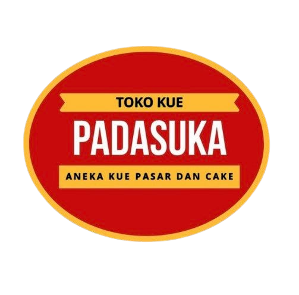
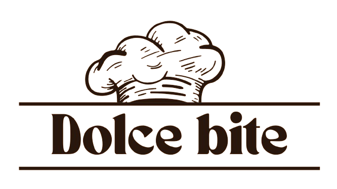
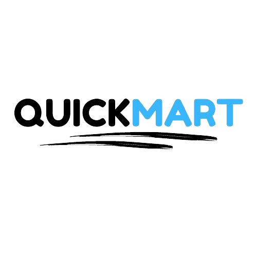

Education
Information System Student | Universitas BSI
3.85/4.00
Skills & Development
Design
UI/UX Design (User-Centered Design)
High & Low-Fidelity Prototyping
Wireframe & Interaction Design
Usability Testing
Development
Basic Programming (Python)
Web Application Development
Mobile App Development
Android Studio, Visual Studio Code
Work Experience
Programmer Intern — Badan Pengelolaan Sistem Informasi (BPSI)
Dewan Perwakilan Daerah Republik Indonesia (DPD RI), Setjen — 3-month internship as a programmer, building internal web applications for the division.
- Developed BPSI App, an internal task and project management web application for the division
- Re-built CMS Presensi, the employee attendance management system, with an improved admin workflow
- Collaborated with the division's team following existing design and development guidelines
Project Experiences
Product Designer & Developer
A web-based inventory management system for Optik Merdeka, helping staff track stock in and out with ease.
- Designed UI/UX and high-fidelity prototypes for 3 user roles (employee & admin)
- Created core features including inventory tracking, stock management, reporting
- Developed inventory workflows for managing incoming and outgoing stock within a 2-month development timeline
Product Designer & Developer
A mobile-based employee attendance and leave request system, aiming to provide efficient and organized processing.
- Designed UI/UX and high-fidelity prototypes for the mobile app using Figma
- Created core features including attendance tracking, leave request/approval management
- Built admin dashboard to manage employee data, request processing, and generation of automated calculations
- Developed inventory workflows for managing incoming and outgoing stock with a 2-month development timeline

PADASUKAProduct Designer & Developer
A web-based employee attendance and payroll system for Toko Kue PadaSuka.
- Designed and developed system for 2 user roles (employee & admin)
- Built core features including attendance tracking, leave request, payroll management
- Developed end-to-end flow from attendance recording to leave approval, integrated with payroll calculation
- Conducted usability testing with 5+ users to improve system accuracy

Dolce BiteProduct Designer & Developer
A web-based cake ordering platform with ordering, tracking, and customer service features.
- Designed and developed system for 2 user roles (customer & admin)
- Created core features including online ordering, cart, checkout, and payment process
- Designed end-to-end flow for online order tracking and admin order management

QUICKMARTUI/UX Designer
A mobile-based e-commerce application designed to provide seamless shopping and fast delivery services.
- Designed core features including product browsing, cart, checkout, and payment process
- Created wireframes and high-fidelity designs for 15+ mobile screens using Figma
- Developed end-to-end flow from product selection to delivery process within 2 months